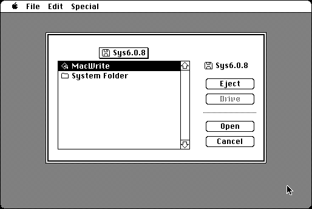

Download
faberfinder414.zip (45K) FaberFinder 4.1.4 repackaged into a zipped hfs disk image and checksum file. The disk image can be mounted with Mini vMac.
faberfinder414.bin (45K) FaberFinder 4.1.4 in the original format.
copyright: Fabrizio Oddone
mod date: Jul 11, 1995
license: shareware
from url :
Other programs
Mini finder replacement. Can launch applications, shutdown, or restart. Tested on System 1.1 and later.

If you find these downloads useful, please consider helping the Gryphel Project, which hosts them.
Here are the md5 checksums for the downloads, signed with Gryphel Key 5:
--------- GRY SIGNED TEXT --------- af4fdfa54b50839db3c4d4e8d95b0657 faberfinder414.zip 8b75e3ad8d03b8bbd2b5255f18140e9f faberfinder414.bin ------- BEGIN GRY SIGNATURE ------- Gry/4Xa8CFcUzxdN/BbyFO3A9ZSPLHJfzrquMv1MQOh7vOe14TVcmV5AaSDhIHwB Yceeboc/nH4eR6iG7HVkKgJiatoBVD9fNOVIVBjh1UYJhUT0Em1WcJu6+LFcSgZK DRhNl6axg9AYNS0tyUvT0sJYedjSga3CeyNXeWv/fMdhILoegB5kIraq+bRpNBkd -------- END GRY SIGNATURE --------